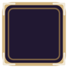
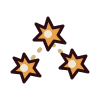

BİLDİRİM DURUMLARI
kolay · bronz kenar · 1 baklava

BAŞARIM AÇILDI
orta · bronz kenar · 2 baklava
BAŞARIM AÇILDI
orta
BAŞARIM AÇILDI
zor · amber kenar+ışıma · 3 baklava

BAŞARIM AÇILDI
çok zor · amber kenar+ışıma · 4 baklava · uzun ad (19 harf; sınır 22)
BAŞARIM AÇILDI
ZAMANLAMA
Giriş 220 ms (yukarıdan 24 px kayar + solma, cubic-out) · bekleme 2 100 ms · çıkış 180 ms = 2 500 ms.Aynı anda en çok 1 bildirim; kuyruk 3; taşan sessizce sonuç özetine gider.
Yanıp sönme yok (≤3 Hz kuralı). Ses yok. Dokunmayı yutmaz (
mouse_filter = IGNORE).Duraklatma / seviye atlama / onay açıkken sayaç durur, bildirim bekler.